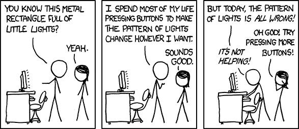
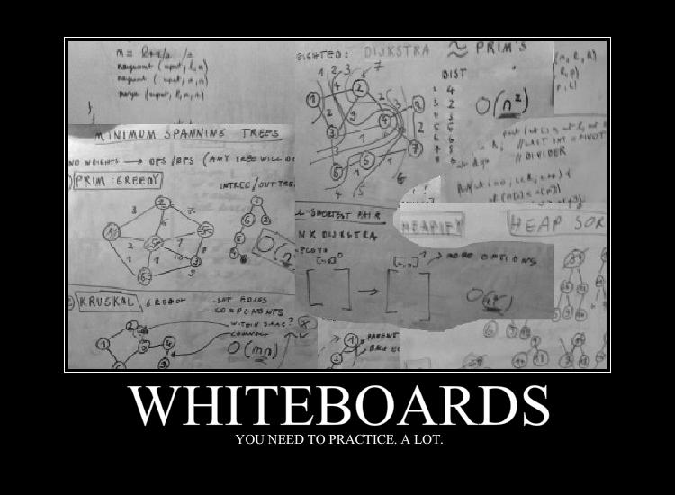
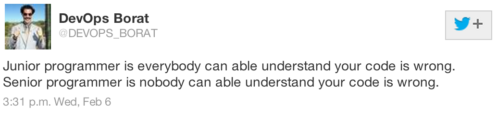

Welcome to programming!

I fixed my bug, but now I have a new one. Some days it really is like this - I keep trying stuff, and nothing works.
Life before Hackbright
Tried to learn programming through online community college courses, weekend workshops, and self study
Worked in IT (helpdesk, operations)
Photographic Industry (I hate shooting weddings!)
It took me a lot of time and perserverance to get where I am today. There was a lot of banging my head against the desk until I had an epiphany or two. I was originally going to try to find a masters program in CS, so I started taking math and intro CS courses to clear up the prerequisites I would need to start applying to programs. It took way too long, and I didn't feel that I fully understood the material. Working fulltime and taking classes part time was also proving to be difficult, but since I really enjoyed spending my weekends coding, I realized I had stumbled onto the most frustrating and rewarding thing that I had ever done.
Life During Hackbright
When you get stuck:
Don't panic: the answer is 42.
Get better at asking questions
If something looks confusing, it probably is
Use your interactive console for debugging!
Articulating what is wrong with your code, or how it is breaking, or even what you're trying to do will help your senseis help you.
It's dangerous to go alone! Take this.
Learn to love pair programming! It's good for you.
Make time to study concepts you don't understand
Ask your mentors for guidance
Don't forget to eat and take breaks!
If you can explain it to someone else, you learn a concept more deeply. You'll have to do this when talking about your code in a work environment.
While not required, it's helpful to spend a little time after hours brushing up on stuff you're confused on.
Your brain needs a break and some glucose. When you're stuck, stepping away for a few minutes can help you gain the clarity you need to solve a problem. As we say in yoga: Practice today so you can practice tomorrow.
Projects!!?
Think big ideas, write every idea down, and then scale back.
Avoid perfectionist paralysis
Don't get overwhelmed by big items on your to-do list: break tasks down into bite-sized pieces.
I was really nervous about having a good enough idea to work on for half my time at Hackbright. I challenged myself to write down every stupid idea, every lofty goal. I came up with a lot of bad ideas, but I have a few good ones too. I now have a project list that's longer than I ever hope to complete, but if I do one or two more in my own time I'll be happy.
I had to remind myself to just write code, and not to think about it too much. A little structure is good since it will keep you from coding in circles, but don't overanalyze your programming.
Having very small tasks (like create method to do x) helped me work rapidly and really think about the structure of my code.
Interview Process

Expect to talk about programming and systems, which is basically what you're doing at Hackbright every day, but now you'll do it with strangers. I had pair programming, whiteboarding, coding challenges, and informal coffee chat style interviews. Expect to talk technical nitty gritty of your project.
I tried to share my newfound enthusiasm for engineering, and my interviewers seemed to be excited too.
Ask your possible future colleagues about the workflow, what you'd be doing, what their culture is like, if they have formal mentoring.
Accept challenges. Go where you are most wanted, providing you like the company too.
I got a job! Can I really do this?

Onboarding and Mentoring
A bit like drinking from the firehose
You might screw something up, but that's OK.
No one treated me like a junior engineer, I had respect from the start.
I once deleted a bunch of data from a redis database. It was a learning experience, to say the least! Give them as much feedback as they give you. Some people are new to mentoring, and they might flail a bit if they're unsure how to teach you. Some days I feel like I have no idea what i'm doing, other days I'm a coding machine. This has not changed 1 year in and I don't expect it to anytime soon.
Responsibilities of an Apprentice
Question anything you don't understand
Be willing to refactor many times over
Speak up when you have ideas, need clarity, or are overwhelmed
Responsibilities of a Mentor
Patience and understanding even during repeated questions
Give Apprentices responsibilities and ownership of more experienced engineers
Teach problem solving, not syntax
Data Engineering
Data can be hairy, nasty stuff. 80% of the work that you do as a Data Engineer is cleanup, sorting, and routing data. A lot of the work that I do is making streams of data from our applications show up in different data warehouses so we can do cool things with it later (or even in realtime!)
As a result, I'm learning quite a bit about architecture. It's not easy, but it's a fun challenge, and keeps me on my toes looking for the simplest solution that works.
Yak Shaving
Those yaks sure are hairy!
Yak shaving is all the stuff you have to install, configure, test, etc BEFORE you can actually get any work done. One of the more frustrating thigns about being an engineer.
Engineering Workflow
Observe, Analyze, Change Parameter, Observe, Analyze...
Some days I'll spend more time doing research than coding.
I'm responsible for fixing stuff that breaks, just like the rest of my team.
Writing code is easy. People Engineering - communicating with stakeholders, nailing down specs, and working on teams is the hard part.
Giving Back to Your Community
Mentoring
Tech Talks
Contributing to Open Source
Your community of software engineers is important. It's how you'll find jobs you love, and how you grow as an engineer. Teaching others helps strengthen your knowledge.
Personal Projects
I don't always feel like spending the weekend coding, but I do on occasion take time out of my weekend to work on projects. If it makes you happy, make time for coding fun stuff outside of work.